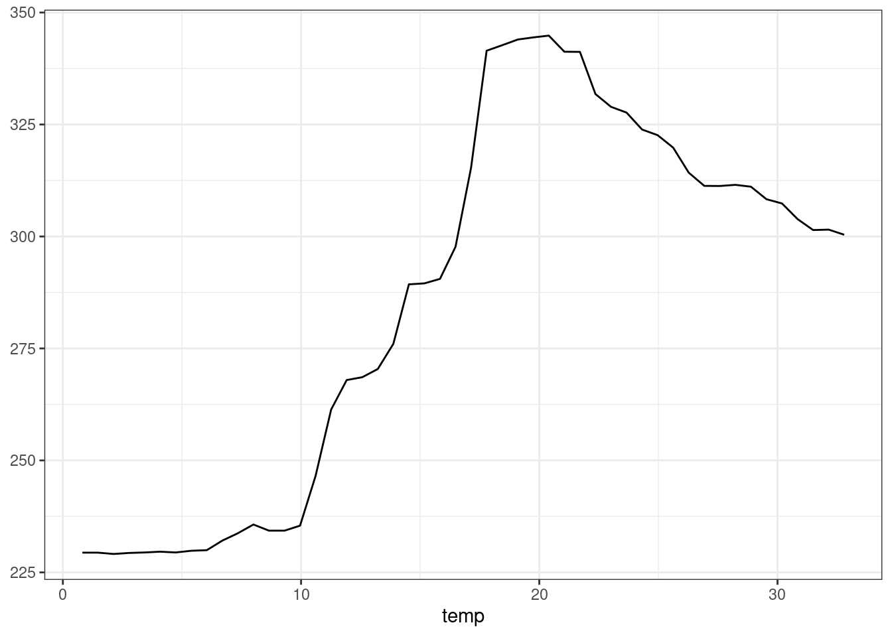
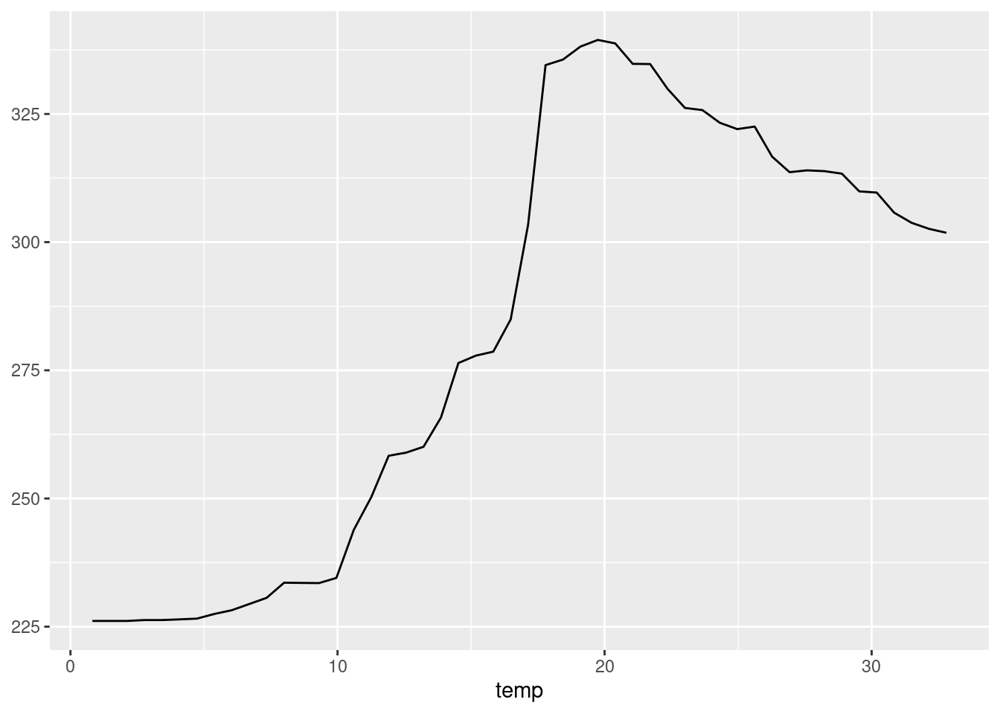
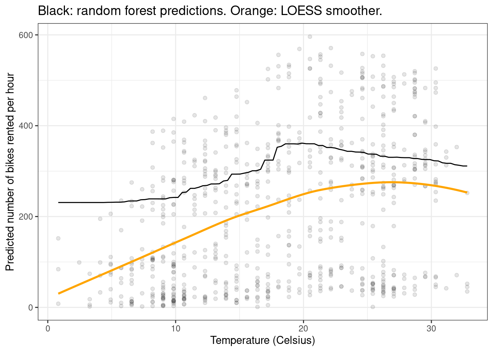

remotes::install_github("vincentarelbundock/marginaleffects")19 Machine Learning
marginaleffects offers several “model-agnostic” functions to interpret statistical and machine learning models. This vignette highlights how the package can be used to extract meaningful insights from models trained using the mlr3 and tidymodels frameworks.
The features in this vignette require version 0.16.0 or marginaleffects, or the development version which can be installed from Github:
Make sure to restart R after installation. Then, load a few libraries:
library("marginaleffects")
library("fmeffects")
library("ggplot2")
library("mlr3verse")
library("tidymodels") |> suppressPackageStartupMessages()
options(width = 10000)
19.1 mlr3
mlr3 is a machine learning framework for R. It makes it possible for users to train a wide range of models, including linear models, random forests, gradient boosting machines, and neural networks.
In this example, we use the bikes dataset supplied by the fmeffects package to train a random forest model predicting the number of bikes rented per hour. We then use marginaleffects to interpret the results of the model.
data("bikes", package = "fmeffects")
task <- as_task_regr(x = bikes, id = "bikes", target = "count")
forest <- lrn("regr.ranger")$train(task)As described in other vignettes, we can use the avg_comparisons() function to compute the average change in predicted outcome that is associated with a change in each feature:
avg_comparisons(forest, newdata = bikes)
Term Contrast Estimate
count +1 0.000
holiday False - True 13.835
humidity +1 -23.142
month +1 3.874
season spring - fall -30.230
season summer - fall -7.471
season winter - fall 4.135
temp +1 3.558
weather misty - clear -7.759
weather rain - clear -60.609
weekday Fri - Sun 68.991
weekday Mon - Sun 77.713
weekday Sat - Sun 22.763
weekday Thu - Sun 84.597
weekday Tue - Sun 83.098
weekday Wed - Sun 85.500
windspeed +1 0.254
workingday False - True -192.565
year 1 - 0 98.296
Columns: term, contrast, estimate
Type: response These results are easy to interpret: An increase of 1 degree Celsius in the temperature is associated with an increase of 3.558 bikes rented per hour.
We could obtain the same result manually as follows:
lo <- transform(bikes, temp = temp - 0.5)
hi <- transform(bikes, temp = temp + 0.5)
mean(predict(forest, newdata = hi) - predict(forest, newdata = lo))[1] 3.558093As the code above makes clear, the avg_comparisons() computes the effect of a “centered” change on the outcome. If we want to compute a “Forward Marginal Effect” instead, we can call:
avg_comparisons(
forest,
variables = list("temp" = \(x) data.frame(x, x + 1)),
newdata = bikes)
Term Contrast Estimate
temp custom 2.41
Columns: term, contrast, estimate
Type: response This is equivalent to using the fmeffects package:
fmeffects::fme(
model = forest,
data = bikes,
target = "count",
feature = "temp",
step.size = 1)$ame [1] 2.412783With marginaleffects::avg_comparisons(), we can also compute the average effect of a simultaneous change in multiple predictors, using the variables and cross arguments. In this example, we see what happens (on average) to the predicted outcome when the temp, season, and weather predictors all change together:
avg_comparisons(
forest,
variables = c("temp", "season", "weather"),
cross = TRUE,
newdata = bikes)
Estimate C: season C: temp C: weather
-33.443 spring - fall +1 misty - clear
-76.611 spring - fall +1 rain - clear
-11.686 summer - fall +1 misty - clear
-62.018 summer - fall +1 rain - clear
-0.179 winter - fall +1 misty - clear
-55.485 winter - fall +1 rain - clear
Columns: term, contrast_season, contrast_temp, contrast_weather, estimate
Type: response 20 tidymodels
marginaleffects also supports the tidymodels machine learning framework. When the underlying engine used by tidymodels to train the model is itself supported as a standalone package by marginaleffects, we can obtain estimates of uncertainty estimates:
suppressPackageStartupMessages(library(tidymodels))
mod <- linear_reg(mode = "regression") |>
set_engine("lm") |>
fit(count ~ ., data = bikes)
avg_comparisons(mod, newdata = bikes, type = "response")
Term Contrast Estimate Std. Error z Pr(>|z|) S 2.5 % 97.5 %
holiday False - True 202.251 16.322 12.391 < 0.001 114.7 170.26 234.242
humidity +1 -13.488 19.974 -0.675 0.49948 1.0 -52.64 25.659
month +1 -1.363 1.398 -0.974 0.32987 1.6 -4.10 1.378
season spring - fall -67.924 14.119 -4.811 < 0.001 19.3 -95.60 -40.251
season summer - fall -9.242 9.583 -0.964 0.33485 1.6 -28.02 9.540
season winter - fall 31.704 11.471 2.764 0.00571 7.5 9.22 54.187
temp +1 5.010 0.630 7.954 < 0.001 49.0 3.78 6.244
weather misty - clear -20.147 6.215 -3.241 0.00119 9.7 -32.33 -7.965
weather rain - clear -112.211 9.881 -11.356 < 0.001 96.9 -131.58 -92.844
weekday Fri - Sun 224.628 9.744 23.054 < 0.001 388.2 205.53 243.725
weekday Mon - Sun 244.680 10.012 24.438 < 0.001 435.7 225.06 264.304
weekday Sat - Sun 15.072 9.714 1.552 0.12075 3.0 -3.97 34.111
weekday Thu - Sun 273.735 9.789 27.963 < 0.001 569.2 254.55 292.921
weekday Tue - Sun 267.743 9.822 27.258 < 0.001 541.1 248.49 286.995
weekday Wed - Sun 275.465 9.755 28.237 < 0.001 580.3 256.35 294.585
windspeed +1 -0.542 0.398 -1.362 0.17310 2.5 -1.32 0.238
workingday False - True 0.000 NA NA NA NA NA NA
year 1 - 0 108.398 5.226 20.741 < 0.001 315.0 98.16 118.641
Columns: term, contrast, estimate, std.error, statistic, p.value, s.value, conf.low, conf.high
Type: response When the underlying engine that tidymodels uses to fit the model is not supported by marginaleffects as a standalone model, we can also obtain correct results, but no uncertainy estimates. Here is a random forest model:
forest_tidy <- rand_forest(mode = "regression") |>
set_engine("ranger") |>
fit(count ~ ., data = bikes)
avg_comparisons(forest_tidy, newdata = bikes, type = "numeric")
Term Contrast Estimate
count +1 0.000
holiday False - True 13.487
humidity +1 -24.291
month +1 4.076
season spring - fall -29.015
season summer - fall -6.781
season winter - fall 4.958
temp +1 3.399
weather misty - clear -7.555
weather rain - clear -59.817
weekday Fri - Sun 70.596
weekday Mon - Sun 78.772
weekday Sat - Sun 22.198
weekday Thu - Sun 86.375
weekday Tue - Sun 84.493
weekday Wed - Sun 86.895
windspeed +1 0.141
workingday False - True -192.057
year 1 - 0 99.677
Columns: term, contrast, estimate
Type: numeric 21 Plot
We can plot the results using the standard marginaleffects helpers. For example, to plot predictions, we can do:
plot_predictions(forest, condition = "temp", newdata = bikes)
As documented in ?plot_predictions, using condition="temp" is equivalent to creating an equally-spaced grid of temp values, and holding all other predictors at their means or modes. In other words, it is equivalent to:
Alternatively, we could plot “marginal” predictions, where replicate the full dataset once for every value of temp, and then average the predicted values over each value of the x-axis:
d <- datagridcf(newdata = bikes, temp = unique)
plot_predictions(forest, by = "temp", newdata = d)
Of course, we can customize the plot using all the standard ggplot2 functions:
plot_predictions(forest, by = "temp", newdata = d) +
geom_point(data = bikes, aes(x = temp, y = count), alpha = 0.1) +
geom_smooth(data = bikes, aes(x = temp, y = count), se = FALSE, color = "orange") +
labs(x = "Temperature (Celcius)", y = "Predicted number of bikes rented per hour",
title = "Black: random forest predictions. Green: LOESS smoother.") +
theme_bw()`geom_smooth()` using method = 'loess' and formula = 'y ~ x'